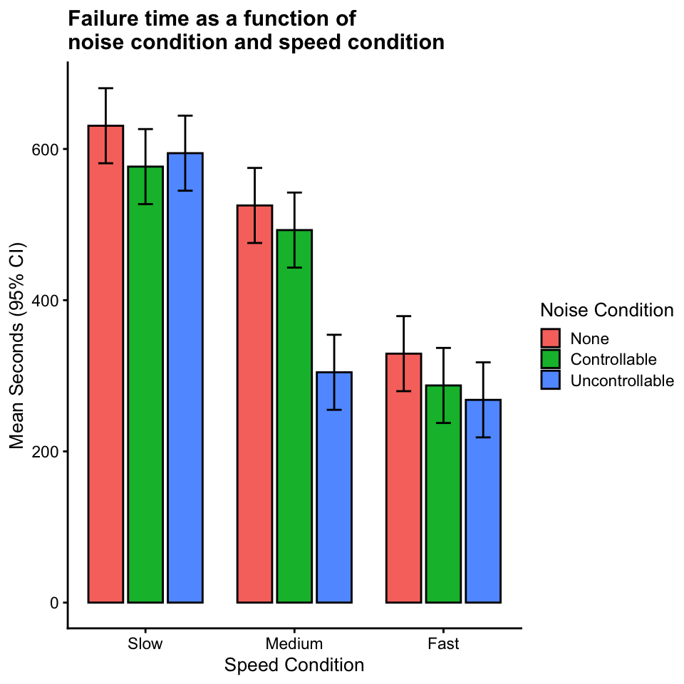
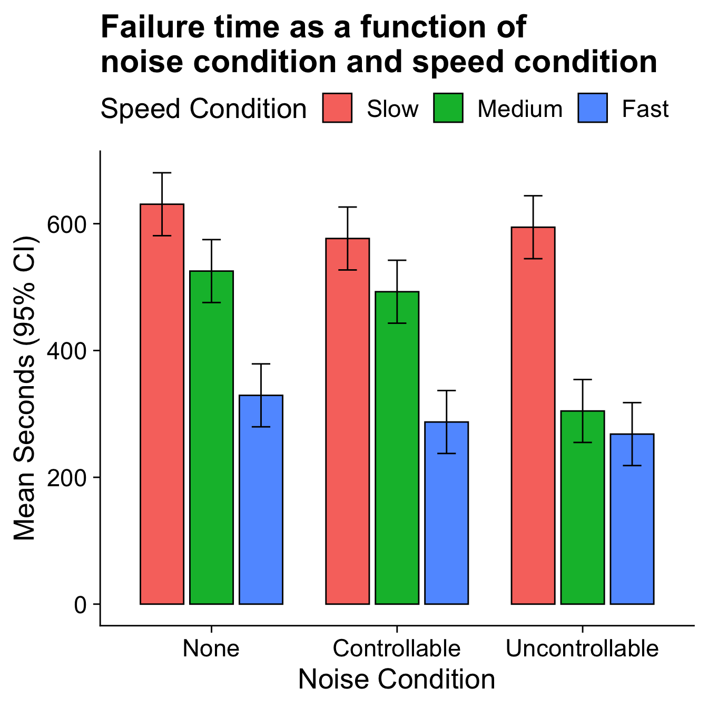
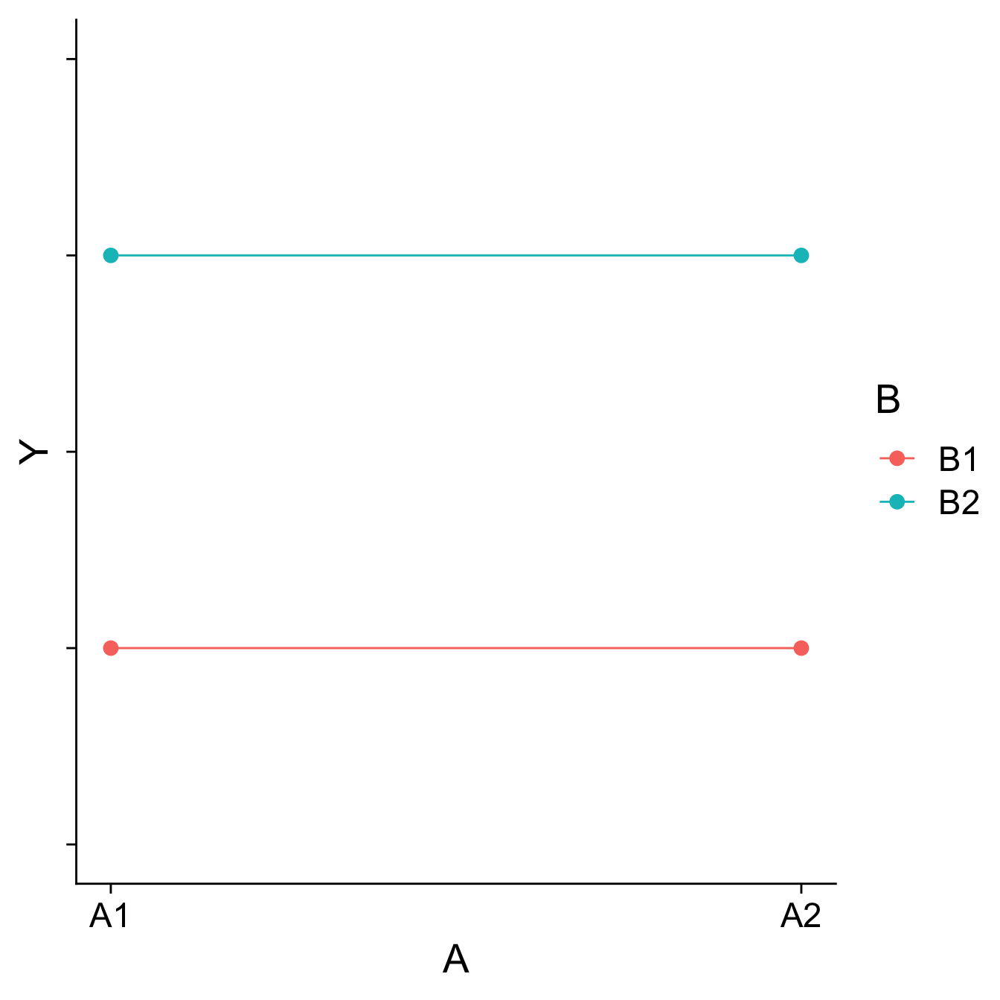
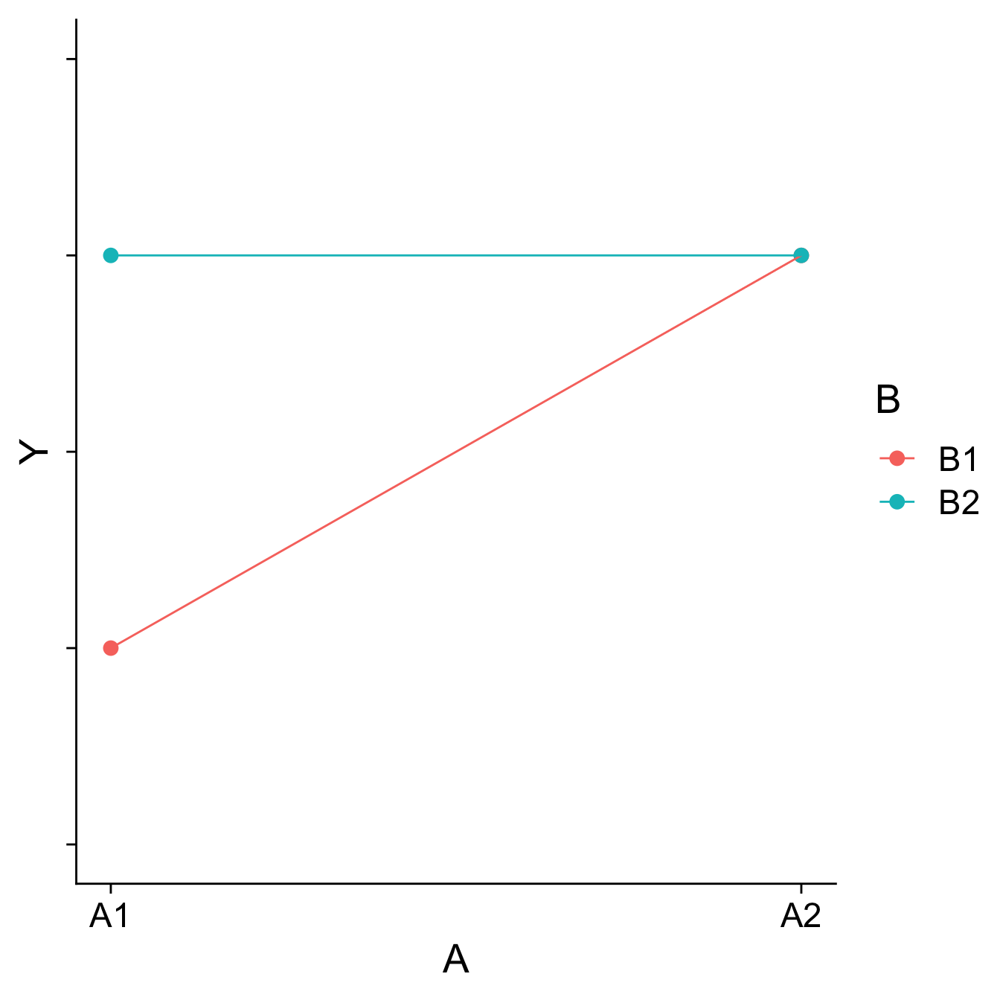
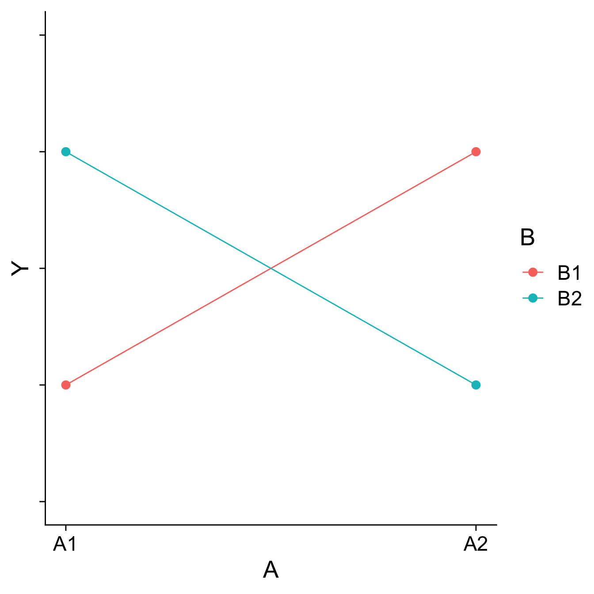

Factorial ANOVA
Factorial ANOVA
The interaction of two or more categorical variables in a general linear model is formally known as Factorial ANOVA .
A factorial design is used when there is an interest in how two or more variables (or factors) affect the outcome.
Rather than conduct separate one-way ANOVAs for each factor, they are all included in one analysis.
The unique and important advantage to a factorial ANOVA over separate one-way ANOVAs is the ability to examine interactions.
The example data are from a simulated study in which 180 participants performed an eye-hand coordination task in which they were required to keep a mouse pointer on a red dot that moved in a circular motion.

The outcome was the time of the 10th failure. The experiment used a completely crossed, 3 x 3 factorial design. One factor was dot speed: .5, 1, or 1.5 revolutions per second. The second factor was noise condition: no noise, controllable noise, and uncontrollable noise. The design was balanced.
Marginal means
| Noise | Fast | Medium | Slow | Marginal |
|---|---|---|---|---|
| Controllable | 287.23 | 492.72 | 576.67 | 452.21 |
| None | 329.28 | 525.29 | 630.72 | 495.10 |
| Uncontrollable | 268.16 | 304.62 | 594.44 | 389.08 |
| Marginal | 294.89 | 440.88 | 600.61 | 445.46 |
Regardless of noise condition, does speed of the moving dot affect performance?
Marginal means
| Noise | Fast | Medium | Slow | Marginal |
|---|---|---|---|---|
| Controllable | 287.23 | 492.72 | 576.67 | 452.21 |
| None | 329.28 | 525.29 | 630.72 | 495.10 |
| Uncontrollable | 268.16 | 304.62 | 594.44 | 389.08 |
| Marginal | 294.89 | 440.88 | 600.61 | 445.46 |
Regardless of dot speed, does noise condition affect performance?
Marginal means
| Noise | Fast | Medium | Slow | Marginal |
|---|---|---|---|---|
| Controllable | 287.23 | 492.72 | 576.67 | 452.21 |
| None | 329.28 | 525.29 | 630.72 | 495.10 |
| Uncontrollable | 268.16 | 304.62 | 594.44 | 389.08 |
| Marginal | 294.89 | 440.88 | 600.61 | 445.46 |
The marginal mean differences correspond to main effects. They tell us what impact a particular factor has, ignoring the impact of the other factor.
Marginal means
| Noise | Fast | Medium | Slow | Marginal |
|---|---|---|---|---|
| Controllable | 287.23 | 492.72 | 576.67 | 452.21 |
| None | 329.28 | 525.29 | 630.72 | 495.10 |
| Uncontrollable | 268.16 | 304.62 | 594.44 | 389.08 |
| Marginal | 294.89 | 440.88 | 600.61 | 445.46 |
The remaining effect in a factorial design, and it primary advantage over separate one-way ANOVAs, is the ability to examine simple main effects, sometimes called conditional effects.
Mean differences
| Noise | Fast | Medium | Slow | Marginal |
|---|---|---|---|---|
| Controllable | 287.23 | 492.72 | 576.67 | 452.21 |
| None | 329.28 | 525.29 | 630.72 | 495.10 |
| Uncontrollable | 268.16 | 304.62 | 594.44 | 389.08 |
| Marginal | 294.89 | 440.88 | 600.61 | 445.46 |
Are the marginal mean differences for noise condition a good representation of what is happening within each of the dot speed conditions?
If not, then we would need to say that the noise condition effect depends upon (is conditional on) dot speed.
The noise condition means are most distinctly different in the medium speed condition. The noise condition means are clearly not different in the fast speed condition.
Interpretation of interactions
The presence of an interaction qualifies any main effect conclusions, leading to “yes, but” or “it depends” kinds of inferences.

Does noise condition affect failure time?
“Yes, but the magnitude of the effect is strongest for the medium speed condition, weaker for the fast speed condition, and mostly absent for the slow speed condition.”
Interactions are symmetrical
The speed condition means are clearly different in each noise condition, but the pattern of those differences is not the same
The marginal speed condition means do not represent well the means in each noise condition.
An interaction.

Null Hypotheses
| Slow | Medium | Fast | Marginal | |
|---|---|---|---|---|
| No Noise | \(\mu_{11}\) | \(\mu_{12}\) | \(\mu_{13}\) | \(\mu_{1.}\) |
| Controllable | \(\mu_{21}\) | \(\mu_{22}\) | \(\mu_{23}\) | \(\mu_{2.}\) |
| Uncontrollable | \(\mu_{31}\) | \(\mu_{32}\) | \(\mu_{33}\) | \(\mu_{3.}\) |
| Marginal | \(\mu_{.1}\) | \(\mu_{.2}\) | \(\mu_{.3}\) | \(\mu_{..}\) |
The two main effects and the interaction represent three independent questions we can ask about the data. We have three null hypotheses to test.
One null hypothesis refers to the marginal row means.
Null Hypotheses
| Slow | Medium | Fast | Marginal | |
|---|---|---|---|---|
| No Noise | \(\mu_{11}\) | \(\mu_{12}\) | \(\mu_{13}\) | \(\mu_{1.}\) |
| Controllable | \(\mu_{21}\) | \(\mu_{22}\) | \(\mu_{23}\) | \(\mu_{2.}\) |
| Uncontrollable | \(\mu_{31}\) | \(\mu_{32}\) | \(\mu_{33}\) | \(\mu_{3.}\) |
| Marginal | \(\mu_{.1}\) | \(\mu_{.2}\) | \(\mu_{.3}\) | \(\mu_{..}\) |
\[ \begin{aligned} H_0&: \mu_{1.} = \mu_{2.} = \dots = \mu_{R.}\\ H_1&: \text{Not true that }\mu_{1.} = \mu_{2.} = \dots = \mu_{R.} \end{aligned} \]
Null Hypotheses
| Slow | Medium | Fast | Marginal | |
|---|---|---|---|---|
| No Noise | \(\mu_{11}\) | \(\mu_{12}\) | \(\mu_{13}\) | \(\mu_{1.}\) |
| Controllable | \(\mu_{21}\) | \(\mu_{22}\) | \(\mu_{23}\) | \(\mu_{2.}\) |
| Uncontrollable | \(\mu_{31}\) | \(\mu_{32}\) | \(\mu_{33}\) | \(\mu_{3.}\) |
| Marginal | \(\mu_{.1}\) | \(\mu_{.2}\) | \(\mu_{.3}\) | \(\mu_{..}\) |
We can state this differently:
\[ \begin{aligned} \alpha_r&= \mu_{r.} - \mu_{..} \\ H_0&: \alpha_1 = \alpha_2 = \dots = \alpha_R = 0\\ H_1&: \text{At least one }\alpha_r \neq 0 \end{aligned} \]
Null Hypotheses
| Slow | Medium | Fast | Marginal | |
|---|---|---|---|---|
| No Noise | \(\mu_{11}\) | \(\mu_{12}\) | \(\mu_{13}\) | \(\mu_{1.}\) |
| Controllable | \(\mu_{21}\) | \(\mu_{22}\) | \(\mu_{23}\) | \(\mu_{2.}\) |
| Uncontrollable | \(\mu_{31}\) | \(\mu_{32}\) | \(\mu_{33}\) | \(\mu_{3.}\) |
| Marginal | \(\mu_{.1}\) | \(\mu_{.2}\) | \(\mu_{.3}\) | \(\mu_{..}\) |
The main effect for dot speed can be stated similarly:
\[ \begin{aligned} \beta_c&= \mu_{.c} - \mu_{..} \\ H_0&: \beta_1 = \beta_2 = \dots = \beta_C = 0\\ H_1&: \text{At least one }\beta_c \neq 0 \end{aligned} \]
Null Hypothesis
| Slow | Medium | Fast | Marginal | |
|---|---|---|---|---|
| No Noise | \(\mu_{11}\) | \(\mu_{12}\) | \(\mu_{13}\) | \(\mu_{1.}\) |
| Controllable | \(\mu_{21}\) | \(\mu_{22}\) | \(\mu_{23}\) | \(\mu_{2.}\) |
| Uncontrollable | \(\mu_{31}\) | \(\mu_{32}\) | \(\mu_{33}\) | \(\mu_{3.}\) |
| Marginal | \(\mu_{.1}\) | \(\mu_{.2}\) | \(\mu_{.3}\) | \(\mu_{..}\) |
The interaction null hypothesis can then be stated as follows:
\[ \begin{aligned} (\alpha\beta)_{rc}&= \mu_{rc} - \alpha_r - \beta_c - \mu_{..} \\ H_0&: (\alpha\beta)_{11} = (\alpha\beta)_{12} = \dots = (\alpha\beta)_{RC} = 0\\ H_1&: \text{At least one }(\alpha\beta)_{rc} \neq 0 \end{aligned} \]
Variability
As was true for the simpler one-way ANOVA, we will partition the total variability in the data matrix into two basic parts.
One part will represent variability within groups . This within-group variability is variability that has nothing to do with the experimental conditions (all participants within a particular group experience the same experimental conditions).
The other part will be between-group variability . This part will include variability due to experimental conditions. We will further partition this between-group variability into parts due to the two main effects and the interaction.
Variability
\[ \begin{aligned} SS_{\text{total}} &= \sum_{r=1}^R\sum_{c=1}^C\sum_{i=1}^{N_{rc}}(Y_{rci}-\bar{Y}_{...})^2 \\ SS_{\text{Within}} &= \sum_{r=1}^R\sum_{c=1}^C\sum_{i=1}^{N_{rc}}(Y_{rci}-\bar{Y}_{rc.})^2 \\ SS_R &= CN\sum_{r=1}^R(\bar{Y}_{r..}-\bar{Y}_{...})^2\\ SS_C &= RN\sum_{c=1}^C(\bar{Y}_{.c.}-\bar{Y}_{...})^2\\ SS_{RC} &= N\sum_{r=1}^R\sum_{c=1}^C(\bar{Y}_{rc.}-\bar{Y}_{r..}-\bar{Y}_{.c.}+\bar{Y}_{...})^2 \\ \end{aligned} \]
Variability
If the design is balanced (equal observations in all conditions), then:
\[ SS_{\text{total}} = SS_{\text{within}} + SS_R + SS_C + SS_{RxC}\]
Variability
\(df\), \(MS\), and \(F\) ratios are defined in the same way as they were for one-way ANOVA. We just have more of them. \[ \begin{aligned} df_R &= R-1 \\ df_C &= C-1 \\ df_{RxC} &= (R-1)(C-1) \\ df_{within} &= N-G \\ &= N-(R-1)-(C-1)-[(R-1)(C-1)]-1\\ &= df_{total} - df_{R} - df_C - df_{RxC} \end{aligned} \]
Variability
\(df\), \(MS\), and \(F\) ratios are defined in the same way as they were for one-way ANOVA. We just have more of them.
\[ \begin{aligned} MS_R &= \frac{SS_R}{df_R} \\ MS_C &= \frac{SS_C}{df_C} \\ MS_{RxC} &= \frac{SS_{RxC}}{df_{RxC}} \\ MS_{within} &= \frac{SS_{within}}{df_{within}} \\ \end{aligned} \]
Each mean square is a variance estimate. \(MS_{within}\) is the pooled estimate of the within-groups variance. It represents only random or residual variation. \(MS_R\), \(MS_C\), and \(MS_{RxC}\) also contain random variation, but include systematic variability too.
F-statistics
\(df\), \(MS\), and \(F\) ratios are defined in the same way as they were for one-way ANOVA. We just have more of them.
\[ \begin{aligned} F_R &= \frac{MS_R}{MS_{within}} \\ \\ F_C &= \frac{MS_C}{MS_{within}} \\ \\ F_{RxC} &= \frac{MS_{RxC}}{MS_{within}} \\ \end{aligned} \]
If the null hypotheses are true, these ratios will be ~1.00 because the numerator and denominator of each estimate the same thing. Departures from 1.00 indicate that systematic variability is present. If large enough, we reject the null hypothesis (each considered separately).
Degrees of freedom
The degrees of freedom for the different F ratios might not be the same. Different degrees of freedom define different theoretical F density distributions for determining what is an unusual value under the null hypothesis.
Which is to say, you might get the same F-ratio for two different tests, but they could have different p-values, if they represent different numbers of groups.
Interpretation of significance tests
Analysis of Variance Table
Response: Time
Df Sum Sq Mean Sq F value Pr(>F)
Speed 2 2805871 1402936 109.3975 < 0.00000000000000022 ***
Noise 2 341315 170658 13.3075 0.000004252 ***
Speed:Noise 4 295720 73930 5.7649 0.0002241 ***
Residuals 171 2192939 12824
---
Signif. codes: 0 '***' 0.001 '**' 0.01 '*' 0.05 '.' 0.1 ' ' 1Interpretation?
All three null hypotheses are rejected. This only tells us that systemic differences among the means are present; follow-up comparisons are necessary to determine the nature of the differences.
Interpretation of significance tests
Analysis of Variance Table
Response: Time
Df Sum Sq Mean Sq F value Pr(>F)
Speed 2 2805871 1402936 109.3975 < 0.00000000000000022 ***
Noise 2 341315 170658 13.3075 0.000004252 ***
Speed:Noise 4 295720 73930 5.7649 0.0002241 ***
Residuals 171 2192939 12824
---
Signif. codes: 0 '***' 0.001 '**' 0.01 '*' 0.05 '.' 0.1 ' ' 1Both main effects and the interaction are significant.
The significant interaction qualifies the main effects:
- The magnitude of the speed main effect varies across the noise conditions.
- The magnitude of the noise main effect varies across the speed conditions.
Visualizing main effects and interactions
Different combinations of main effects and interactions yield different shapes when plotted. An important skill is recognizing how plots will change based on the presence or absence of specific effects.
Main effects are tests of differences in means; a significant main effect will yield a difference – the mean of Group 1 will be different than the mean of Group 2, for example.
Interactions are tests of the differences of differences of means – is the difference between Group 1 and Group 2 different in Condition A than that difference is in Condition B, for example.
Visualizing main effects and interactions
Visualizing main effects and interactions
Visualizing main effects and interactions
Visualizing main effects and interactions
How would you plot….
- A main effect of A, no main effect of B, and no interaction?
- A main effect of A, a main effect of B, and no interaction?
- No main effect of A, a main effect of B, and an interaction?
Effect size
All of the effects in the ANOVA are statistically significant, but how big are they? An effect size, \(\eta^2\), provides a simple way of indexing effect magnitude for ANOVA designs, especially as they get more complex.
\[ \eta^2 = \frac{SS_{\text{effect}}}{SS_{\text{total}}}\] If the design is balanced…
\[ SS_{\text{total}} = SS_{\text{speed}} + SS_{\text{noise}}+SS_{\text{speed:noise}}+SS_{\text{within}}\]
| Source | SS | eta 2 | partial eta 2 |
|---|---|---|---|
| Speed | 2805871.4 | 0.50 | 0.56 |
| Noise | 341315.2 | 0.06 | 0.13 |
| Speed:Noise | 295719.7 | 0.05 | 0.12 |
| Residuals | 2192938.9 | ||
| Total |
The Speed main effect accounts for 8 to 9 times as much variance in the outcome as the Noise main effect and the Speed x Noise interaction.

\(\eta^2\)
If the design is balanced:
There is no overlap among the independent variables. They are uncorrelated.
The variance accounted for by any effect is unique. There is no ambiguity about the source of variance accounted for in the outcome.
The sum of the \(\eta^2\) for effects and residual is 1.00.
\(\eta^2\)
One argument against \(\eta^2\) is that its magnitude depends in part on the magnitude of the other effects in the design. If the amount of variability due to Noise or Speed x Noise changes, so to does the effect size for Speed.
\[ \eta^2_{\text{speed}} = \frac{SS_{\text{speed}}}{SS_{\text{speed}} + SS_{\text{noise}} + SS_{\text{speed:noise}}+ SS_{\text{within}}}\]
\(\eta^2\)
An alternative is to pretend the other effects do not exist and reference the effect sum of squares to residual variability.
\[ \text{partial }\eta^2_{\text{speed}} = \frac{SS_{\text{speed}}}{SS_{\text{speed}} + SS_{\text{within}}}\]
\(\eta^2\)
One rationale for partial \(\eta^2\) is that the residual variability represents the expected variability in the absence of any treatments or manipulations. The presence of any treatments or manipulations only adds to total variability. Viewed from that perspective, residual variability is a sensible benchmark against which to judge any effect.
\[ \text{partial }\eta^2_{\text{effect}} = \frac{SS_{\text{effect}}}{SS_{\text{effect}} + SS_{\text{within}}}\]
Partial \(\eta^2\) is sometimes described as the expected effect size in a study in which the effect in question is the only effect present.
| Source | SS | eta2 | partial eta2 |
|---|---|---|---|
| Speed | 2805871.4 | 0.50 | 0.56 |
| Noise | 341315.2 | 0.06 | 0.13 |
| Speed:Noise | 295719.7 | 0.05 | 0.12 |
| Residuals | 2192938.9 | ||
| Total |
Partial \(\eta^2\) will be larger than \(\eta^2\) if the ignored effects account for any variability.
The sum of partial \(\eta^2\) does not have a meaningful interpretation.
Differences in means
In a factorial design, marginal means or cell means must be calculated in order to interpret main effects and the interaction, respectively. The confidence intervals around those means likewise are needed.
| Noise | Fast | Medium | Slow | Marginal |
|---|---|---|---|---|
| Controllable | 287.23 | 492.72 | 576.67 | 452.21 |
| None | 329.28 | 525.29 | 630.72 | 495.10 |
| Uncontrollable | 268.16 | 304.62 | 594.44 | 389.08 |
| Marginal | 294.89 | 440.88 | 600.61 | 445.46 |
Precision
If the homogeneity of variances assumption holds, a common estimate of score variability \((MS_{within})\) underlies all of the confidence intervals.
\[ SE_{mean} = \sqrt{\frac{MS_{within}}{N}}\]
\[ CI_{mean} = Mean \pm t_{df_{within}, \alpha = .05}\sqrt{\frac{MS_{within}}{N}}\]
The sample size, \(N\), depends on how many cases are aggregated to create the mean.
Analysis of Variance Table
Response: Time
Df Sum Sq Mean Sq F value Pr(>F)
Speed 2 2805871 1402936 109.3975 < 0.00000000000000022 ***
Noise 2 341315 170658 13.3075 0.000004252 ***
Speed:Noise 4 295720 73930 5.7649 0.0002241 ***
Residuals 171 2192939 12824
---
Signif. codes: 0 '***' 0.001 '**' 0.01 '*' 0.05 '.' 0.1 ' ' 1To get individual cell means, we ask for all combinations of our two predictor variables:
Noise Speed emmean SE df lower.CL upper.CL
Controllable Fast 287 25.3 171 237 337
None Fast 329 25.3 171 279 379
Uncontrollable Fast 268 25.3 171 218 318
Controllable Medium 493 25.3 171 443 543
None Medium 525 25.3 171 475 575
Uncontrollable Medium 305 25.3 171 255 355
Controllable Slow 577 25.3 171 527 627
None Slow 631 25.3 171 581 681
Uncontrollable Slow 594 25.3 171 544 644
Confidence level used: 0.95 The emmeans() function can also produce marginal and cell means along with their confidence intervals. These are the marginal means for the Noise main effect.
In sjPlot(), predicted values are the expected value of Y given all possible values of X, at specific values of M . If you don’t provide specific values of M, you’ll get a plot with all possible values.
In sjPlot(), predicted values are the expected value of Y given all possible values of X, at specific values of M . If you don’t specify M at all, it will choose the reference group of M.
type = "pred" gives you cell means.
In sjPlot(), predicted values are the expected value of Y given all possible values of X, at specific values of M . If you don’t specify M at all, it will choose the reference group of M.
type = "pred" gives you cell means.

In sjPlot(), estimated marginal means are the expected value of Y given all possible values of X, ignoring M .
type = "emm" gives you marginal means.
Precision
A reminder that comparing the confidence intervals for two means (overlap) is not the same as the confidence interval for the difference between two means.
\[ \begin{aligned} SE_{\text{mean}} &= \sqrt{\frac{MS_{within}}{N}}\\ SE_{\text{mean difference}} &= \sqrt{MS_{within}[\frac{1}{N_1}+\frac{1}{N_2}]} \\ SE_{\text{mean difference}} &= \sqrt{\frac{2MS_{within}}{N}} \\ \end{aligned} \]
Cohen’s D
\(\eta^2\) is useful for comparing the relative effect sizes of one factor to another. If you want to compare the differences between groups, Cohen’s d is the more appropriate metric. Like in a t-test, you’ll divide the differences in means by the pooled standard deviation. The pooled variance estimate is the \(MS_{\text{error}}\)
[1] 1402935.71 170657.62 73929.93 12824.20So to get the pooled standard deviation:
Cohen’s D
Noise emmean SE df lower.CL upper.CL
Controllable 452 14.6 171 423 481
None 495 14.6 171 466 524
Uncontrollable 389 14.6 171 360 418
Results are averaged over the levels of: Speed
Confidence level used: 0.95 [1] 0.3787367Power
The likelihood of finding an effect if the effect actually exists. Power gets larger as we:
- increase our sample size
- reduce (error) variance
- raise our Type I error rate
- study larger effects

Power (omnibus test)
When calculating power for the omnibus test, use the expected multiple \(R^2\) value to calculate an effect size:
\[ f^2 = \frac{R^2}{1-R^2}\]
Power (omnibus test)
[1] 0.1111111library(pwr)
pwr.f2.test(u = 3, # number of predictors in the model
f2 = f,
sig.level = .05, #alpha
power =.90) # desired power
Multiple regression power calculation
u = 3
v = 127.5235
f2 = 0.1111111
sig.level = 0.05
power = 0.9v is the denominator df of freedom, so the number of participants needed is v + p + 1.
Power for pairwise comparisons
The comparison of two cell means is analogous to what test?
An independent samples t-test. We can use the Cohen’s D value for any pairwise comparison to examine power.
Noise emmean SE df lower.CL upper.CL
Controllable 452 14.6 171 423 481
None 495 14.6 171 466 524
Uncontrollable 389 14.6 171 360 418
Results are averaged over the levels of: Speed
Confidence level used: 0.95 [1] 0.3787367
Two-sample t test power calculation
n = 147.4716
d = 0.3787367
sig.level = 0.05
power = 0.9
alternative = two.sided
NOTE: n is number in *each* groupFollow-up comparisons
Interpretation of the main effects and interaction in a factorial design will usually require follow-up comparisons. These need to be conducted at the level of the effect.
Interpretation of a main effect requires comparisons among the marginal means .
Interpretation of the interaction requires comparisons among the cell means .
The emmeans package makes these comparisons very easy to conduct.
Marginal means comparisons
$emmeans
Noise emmean SE df lower.CL upper.CL
Controllable 452 14.6 171 423 481
None 495 14.6 171 466 524
Uncontrollable 389 14.6 171 360 418
Results are averaged over the levels of: Speed
Confidence level used: 0.95
$contrasts
contrast estimate SE df t.ratio p.value
Controllable - None -42.9 20.7 171 -2.074 0.0395
Controllable - Uncontrollable 63.1 20.7 171 3.053 0.0052
None - Uncontrollable 106.0 20.7 171 5.128 <.0001
Results are averaged over the levels of: Speed
P value adjustment: holm method for 3 tests Cell means comparisons
$emmeans
Noise Speed emmean SE df lower.CL upper.CL
Controllable Fast 287 25.3 171 237 337
None Fast 329 25.3 171 279 379
Uncontrollable Fast 268 25.3 171 218 318
Controllable Medium 493 25.3 171 443 543
None Medium 525 25.3 171 475 575
Uncontrollable Medium 305 25.3 171 255 355
Controllable Slow 577 25.3 171 527 627
None Slow 631 25.3 171 581 681
Uncontrollable Slow 594 25.3 171 544 644
Confidence level used: 0.95
$contrasts
contrast estimate SE df t.ratio p.value
Controllable Fast - None Fast -42.0 35.8 171 -1.174 1.0000
Controllable Fast - Uncontrollable Fast 19.1 35.8 171 0.533 1.0000
Controllable Fast - Controllable Medium -205.5 35.8 171 -5.738 <.0001
Controllable Fast - None Medium -238.1 35.8 171 -6.648 <.0001
Controllable Fast - Uncontrollable Medium -17.4 35.8 171 -0.486 1.0000
Controllable Fast - Controllable Slow -289.4 35.8 171 -8.082 <.0001
Controllable Fast - None Slow -343.5 35.8 171 -9.592 <.0001
Controllable Fast - Uncontrollable Slow -307.2 35.8 171 -8.579 <.0001
None Fast - Uncontrollable Fast 61.1 35.8 171 1.707 0.9867
None Fast - Controllable Medium -163.4 35.8 171 -4.564 0.0002
None Fast - None Medium -196.0 35.8 171 -5.473 <.0001
None Fast - Uncontrollable Medium 24.7 35.8 171 0.689 1.0000
None Fast - Controllable Slow -247.4 35.8 171 -6.908 <.0001
None Fast - None Slow -301.4 35.8 171 -8.418 <.0001
None Fast - Uncontrollable Slow -265.2 35.8 171 -7.405 <.0001
Uncontrollable Fast - Controllable Medium -224.6 35.8 171 -6.271 <.0001
Uncontrollable Fast - None Medium -257.1 35.8 171 -7.180 <.0001
Uncontrollable Fast - Uncontrollable Medium -36.5 35.8 171 -1.018 1.0000
Uncontrollable Fast - Controllable Slow -308.5 35.8 171 -8.615 <.0001
Uncontrollable Fast - None Slow -362.6 35.8 171 -10.124 <.0001
Uncontrollable Fast - Uncontrollable Slow -326.3 35.8 171 -9.111 <.0001
Controllable Medium - None Medium -32.6 35.8 171 -0.910 1.0000
Controllable Medium - Uncontrollable Medium 188.1 35.8 171 5.252 <.0001
Controllable Medium - Controllable Slow -84.0 35.8 171 -2.344 0.2627
Controllable Medium - None Slow -138.0 35.8 171 -3.854 0.0026
Controllable Medium - Uncontrollable Slow -101.7 35.8 171 -2.841 0.0707
None Medium - Uncontrollable Medium 220.7 35.8 171 6.162 <.0001
None Medium - Controllable Slow -51.4 35.8 171 -1.435 1.0000
None Medium - None Slow -105.4 35.8 171 -2.944 0.0553
None Medium - Uncontrollable Slow -69.2 35.8 171 -1.931 0.6615
Uncontrollable Medium - Controllable Slow -272.1 35.8 171 -7.597 <.0001
Uncontrollable Medium - None Slow -326.1 35.8 171 -9.106 <.0001
Uncontrollable Medium - Uncontrollable Slow -289.8 35.8 171 -8.093 <.0001
Controllable Slow - None Slow -54.1 35.8 171 -1.509 1.0000
Controllable Slow - Uncontrollable Slow -17.8 35.8 171 -0.496 1.0000
None Slow - Uncontrollable Slow 36.3 35.8 171 1.013 1.0000
P value adjustment: holm method for 36 tests Assumptions
You can check the assumptions of the factorial ANOVA in much the same way you check them for multiple regression; but given the categorical nature of the predictors, some assumptions are easier to check.
Homogeneity of variance, for example, can be tested using Levene’s test, instead of examining a plot.
Unbalanced designs
If designs are balanced, then the main effects and interpretation effects are independent/orthogonal. In other words, knowing what condition a case is in on Variable 1 will not make it any easier to guess what condition they were part of in Variable 2.
However, if your design is unbalanced, the main effects and interaction effect are partly confounded.
Sums of Squares
In a Venn diagram, the overlap represents the variance shared by the variables. Now there is variance accounted for in the outcome (Time) that cannot be unambiguously attributed to just one of the predictors There are several options for handling the ambiguous regions.

Sums of Squares (III)

Type III sums of squares is the easiest to understand—the overlapping variance accounted for goes unclaimed by any variable. Effects can only account for the unique variance that they share with the outcome. This is the default in many other statistical programs, including SPSS and SAS.
Sums of Squares (I)
Type I sums of squares allocates the overlapping variance according to some priority rule. All of the variance is claimed, but the rule needs to be justified well or else suspicions about p-hacking are likely. The rule might be based on theory or causal priority or methodological argument.

Sums of Squares (I)
If a design is quite unbalanced, different orders of effects can produce quite different results.
Df Sum Sq Mean Sq F value Pr(>F)
Noise 1 579478 579478 41.78 0.00000000844 ***
Level 1 722588 722588 52.10 0.00000000032 ***
Residuals 77 1067848 13868
---
Signif. codes: 0 '***' 0.001 '**' 0.01 '*' 0.05 '.' 0.1 ' ' 1 eta.sq eta.sq.part
Noise 0.2445144 0.3517689
Level 0.3049006 0.4035822Sums of Squares (I)
If a design is quite unbalanced, different orders of effects can produce quite different results.
Df Sum Sq Mean Sq F value Pr(>F)
Level 1 1035872 1035872 74.69 0.000000000000586 ***
Noise 1 266194 266194 19.20 0.000036815466646 ***
Residuals 77 1067848 13868
---
Signif. codes: 0 '***' 0.001 '**' 0.01 '*' 0.05 '.' 0.1 ' ' 1 eta.sq eta.sq.part
Level 0.4370927 0.4924002
Noise 0.1123222 0.1995395Sums of Squares (II)
Type II sums of squares are commonly used but also a bit more complex to understand.
A technically correct description is that a target effect is allocated the proportion of variance in the outcome that is unshared with other effects that do not contain the target.
Sums of Squares (II)
In an A x B design, the A effect is the proportion of variance that is accounted for by A after removing the variance accounted for by B.
The A x B interaction is allocated the proportion of variance that is accounted for by A x B after removing the variance accounted for by A and B.
There is no convenient way to illustrate this in a Venn diagram.
Sums of Squares
| Effect | Type I | Type II | Type III |
|---|---|---|---|
| A | SS(A) | SS(A|B) | SS(A|B,AB) |
| B | SS(B|A) | SS(B|A) | SS(B|A,AB) |
| A:B | SS(AB|A,B) | SS(AB|A,B) | SS(AB|A,B) |
The aov( ) function in R produces Type I sums of squares. The Anova( ) function from the car package provides Type II and Type III sums of squares.
These work as expected provided the predictors are factors.
Anova Table (Type II tests)
Response: Time
Sum Sq Df F value Pr(>F)
Speed 2805871 2 109.3975 < 0.00000000000000022 ***
Noise 341315 2 13.3075 0.000004252 ***
Speed:Noise 295720 4 5.7649 0.0002241 ***
Residuals 2192939 171
---
Signif. codes: 0 '***' 0.001 '**' 0.01 '*' 0.05 '.' 0.1 ' ' 1All of the between-subjects variance is accounted for by an effect in Type I sums of squares. The sums of squares for each effect and the residual will equal the total sum of squares.
For Type II and Type III sums of squares, the sums of squares for effects and residual will be less than the total sum of squares. Some variance (in the form of SS) goes unclaimed.
The highest order effect (assuming standard ordering) has the same SS in all three models.
When a design is balanced, Type I, II, and III sums of squares are equivalent.
Summary (and Regression)
Factorial ANOVA is the method by which we can examine whether two (or more) categorical IVs have joint effects on a continuous outcome of interest. Like all general linear models, factorial ANOVA is a specific case of multiple regression. However, we may choose to use an ANOVA framework for the sake of interpretability.
Factorial ANOVA
Interaction tests whether there are differences in mean differences.
A (marginal) main effect is the effect of IV1 on the DV ignoring IV2.
A simple main effect is the effect of IV1 on the DV at a specific level of IV2
Regression
Interaction tests whether differences in slopes.
A marginal effect (MEM or AME) is the typica effect of IV1 at the mean of the other variable or across the sample (respectively).
A simple slope is the effect of IV1 on the DV assuming IV2 is a specific value.
Factorial ANOVA
Analysis of Variance Table
Response: Time
Df Sum Sq Mean Sq F value Pr(>F)
Speed 2 2805871 1402936 109.3975 < 0.00000000000000022 ***
Noise 2 341315 170658 13.3075 0.000004252 ***
Speed:Noise 4 295720 73930 5.7649 0.0002241 ***
Residuals 171 2192939 12824
---
Signif. codes: 0 '***' 0.001 '**' 0.01 '*' 0.05 '.' 0.1 ' ' 1Regression
Call:
lm(formula = Time ~ Speed * Noise, data = Data)
Residuals:
Min 1Q Median 3Q Max
-316.23 -70.82 4.99 79.87 244.40
Coefficients:
Estimate Std. Error t value
(Intercept) 287.234 25.322 11.343
SpeedMedium 205.483 35.811 5.738
SpeedSlow 289.439 35.811 8.082
NoiseNone 42.045 35.811 1.174
NoiseUncontrollable -19.072 35.811 -0.533
SpeedMedium:NoiseNone -9.472 50.644 -0.187
SpeedSlow:NoiseNone 12.007 50.644 0.237
SpeedMedium:NoiseUncontrollable -169.023 50.644 -3.337
SpeedSlow:NoiseUncontrollable 36.843 50.644 0.727
Pr(>|t|)
(Intercept) < 0.0000000000000002 ***
SpeedMedium 0.000000042666641 ***
SpeedSlow 0.000000000000111 ***
NoiseNone 0.24200
NoiseUncontrollable 0.59502
SpeedMedium:NoiseNone 0.85185
SpeedSlow:NoiseNone 0.81287
SpeedMedium:NoiseUncontrollable 0.00104 **
SpeedSlow:NoiseUncontrollable 0.46792
---
Signif. codes: 0 '***' 0.001 '**' 0.01 '*' 0.05 '.' 0.1 ' ' 1
Residual standard error: 113.2 on 171 degrees of freedom
Multiple R-squared: 0.6109, Adjusted R-squared: 0.5927
F-statistic: 33.56 on 8 and 171 DF, p-value: < 0.00000000000000022Next time…
Powering interactions
Polynomials